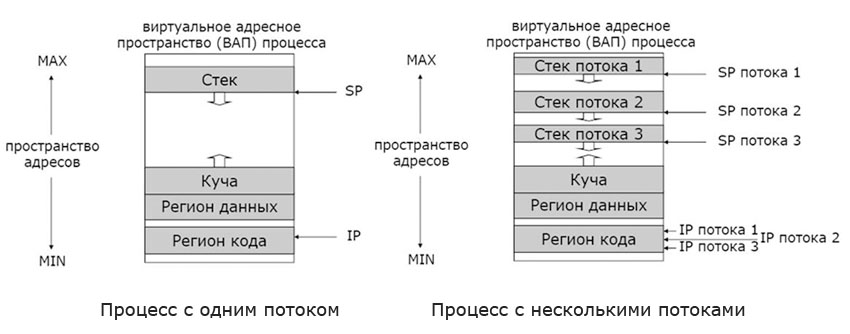

Процессы и потоки
Процесс - абстракция, представляющая программу во время ее выполнения.
Процессу ОС выделяет ресурсы, необходимые для выполнения программы. Процесс – пассивный объект – владелец ресурсов, контейнер для выполнения потоков
В общем случае процессы никак не связаны между собой.
Основные события, приводящие к созданию процессов:
- инициализация системы;
- выполнение изданного работающим процессом системного запроса на создание процесса;
- запрос пользователя на создание процесса;
- инициирование пакетного задания.
Обычно при загрузке операционной системы создаются несколько процессов. Некоторые из них являются высокоприоритетными процессами, то есть обеспечивающими взаимодействие с пользователем и выполняющими заданную работу. Остальные процессы являются фоновыми, они не связаны с конкретными пользователями, но выполняют особые функции.
Завершение процесса происходит благодаря одному из следующих событий:
- обычный выход (преднамеренно);
- выход по ошибке (преднамеренно);
- выход по неисправимой ошибке (непреднамеренно);
- уничтожение другим процессом (непреднамеренно).
В обычных операционных системах каждому процессу соответствует адресное пространство и одиночный управляющий поток.
Процессом (process) называется
экземпляр программы, загруженной в память. Этот
экземпляр может создавать потоки (thread), которые
представляют собой последовательность инструкций на
выполнение. Важно понимать, что выполняются не процессы,
а именно потоки. Причем любой процесс имеет хотя бы один
поток. Этот поток называется главным (основным) потоком
приложения.
- счетчик команд, отслеживающий порядок выполнения действий;
- регистры, в которых хранятся текущие переменные;
- стек, содержащий протокол выполнения процесса.
В зависимости от ситуации существует три состояния потоков:
- поток может выполняться, когда ему выделено процессорное время,
т.е. он может находиться в состоянии активности;
- поток может быть неактивным и ожидать выделения процессора,
т.е. быть в состоянии готовности;
- поток может находиться в состоянии блокировки.
Так как практически всегда потоков гораздо больше, чем
физических процессоров для их выполнения, то потоки на
самом деле выполняются не одновременно, а по очереди
(распределение процессорного времени
происходит именно между потоками, так как процессы не выполняются). Но переключение между
ними происходит так часто, что кажется, будто они
выполняются параллельно.
Термин многопоточность используется для описания использования нескольких потоков в одном процессе.
Многопоточность — свойство платформы (например, операционной системы, JVM и т. д.) или приложения, состоящее в том, что процесс, порождённый в операционной системе, может состоять из нескольких потоков, выполняющихся «параллельно», то есть без предписанного порядка во времени.
Зачем нужны процессы с несколькими потоками:
- для параллельной обработки нескольких однотипных запросов (сетевые сервисы);
- для разделения исполнительных активностей, параллельно решающих различные задачи;
- для создания параллельных программ, эффективно использующих аппаратные ресурсы;
- для улучшения структуры программы.

К достоинствам многопоточности в программировании можно отнести следующее:
- упрощение программы в некоторых случаях, за счет использования общего адресного пространства;
- меньшие относительно процесса временные затраты на создание потока;
- повышение производительности процесса за счет распараллеливания процессорных вычислений и операций
ввода/вывода.
Заслуживающим внимания моментом является также способ организации очередности потоков. Можно было бы обрабатывать все потоки по очереди, но такой способ далеко не самый эффективный. Гораздо разумнее ранжировать все потоки по приоритетам. Приоритет потока обозначается числом от 0 до 31, и определяется исходя из приоритета процесса, породившего поток, и относительного приоритета самого потока. Таким образом, достигается наибольшая гибкость, и каждый поток в идеале получает столько времени, сколько ему необходимо. Иногда приоритет потока может изменяться динамически.
При организации многопоточных приложений следует придерживаться следующих правил:
- не следует организовывать слишком много потоков, рекомендуемый предел – 16 потоков на один процесс
на однопроцессорном компьютере;
- когда несколько потоков используют общий ресурс, они должны [синхронизироваться]
для избежания конфликтов.
[В начало документа]
[Оглавление]